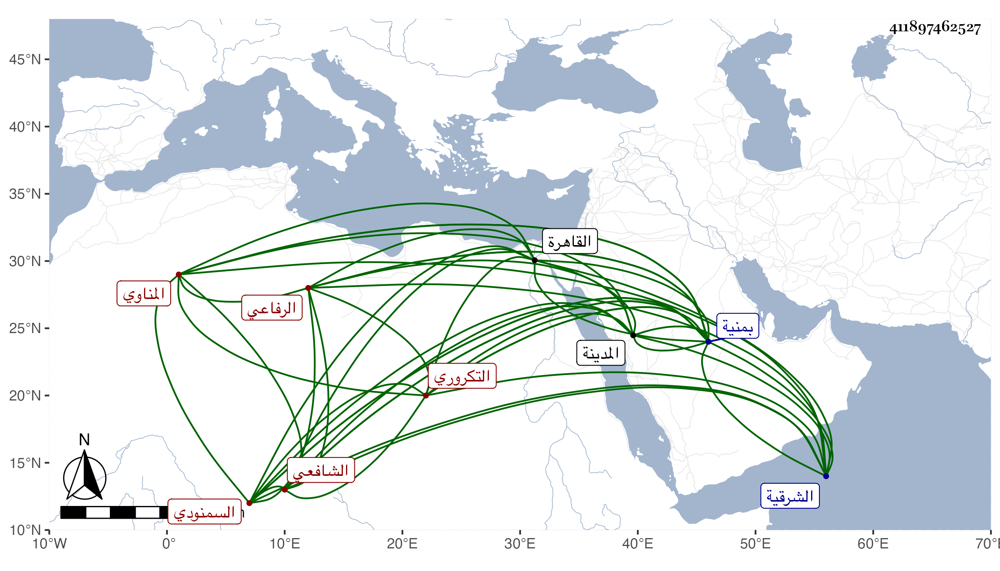

0902Sakhawi.DawLamic.ITO20230111-ara1.EIS1600.411897462527
Biography ID: 411897462527
565
عبد العزيز بن عبد الواحد بن عبد الله بن محمد العز بن التاج التكروري الأصل المناوي السمنودي الشافعي الرفاعي ويسمى محمدا أيضا ويعرف بالمناوي . ولد قبيل التسعين وسبعمائة بمنية سمنود من الشرقية ونشأ بها فقرأ القرآن عند جماعة منهم الشمس محمد بن عبد الكريم بن أحمد المناوي وحفظ العمدة والتنبيه والمنهاج الأصلي وألفية ابن مالك وعرض على جماعة فكان ممن أجاز منهم الكمال الدميري وذلك في يوم النحر سنة سبع بتقديم السين وثمانمائة ، وتفقه بالفقيه عمر بن عيسى السمنودي وعنه أخذ الميقات والفرائض وبه انتفع وكذا بالشمس الغراقي وعليه قرأ في الفرائض وبالنور الادمي ، وحضر دروس البيجوري والشمس البرماوي وقرأ في العربية على الشطنوفي ، وبرع وصار يستحضر مسائل الهيئة والألفية ويجيد الفرائض والميقات بحيث يعمل محاريب تلك الناحية ، كل ذلك مع الديانة وسلامة الباطن والتقشف والتصدي للاقراء والافتاء حتى انتفع به كثيرون ولأهل تلك النواحي فيه اعتقاد كثير ، وقد حج في سنة ثمان عشرة وزار المدينة ورجع إلى بلده فأقام بها وربما دخل القاهرة للسعي في ضروراته وضرورات غيره ، وكان قد كف ثم أبصر ولما تقدم في السن تغير استحضاره وقد لقيه ابن فهد والبقاعي وكذا لقيته بمنية نابت فقرأت عليه جزءا . ومات في أوائل شوال سنة اثنتين وسبعين بمنية سمنود ودفن بزاوية سلفه بها رحمه الله ونفعنا ببركاته .
